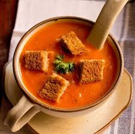
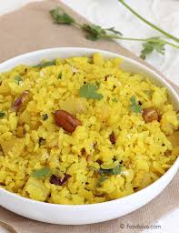
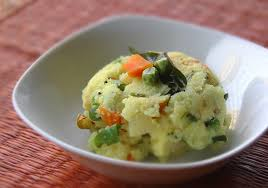
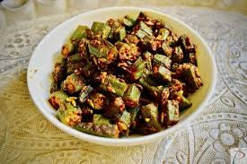

Indian recipes
Omlette

Ingredients:
- 2 Eggs
- 1 meduim sized chopped Onion (Pyaj)
- 1 small sized chopped Tomato (Tamatar)
- 2 chopped Green Chilli (Hari mirch)
- Salt to taste
- 1/2 tsp Garam Masala
- A pinch of Curry Powder
- 1/2 tsp Cumin Seed Powder (Jeera)
- 1 tsp Olive Oil
Procedure:
- Beat the eggs thoroughly in a basin.
- Add the onions, tomatoes and the green chillies. mix thoroughly.
- Add the garam masala powder, curry powder and salt. mix well.
- Heat the oil in a non stick pan and add the cumin seeds.fry for a few seconds over a medium flame.
- Pour the egg mixture and cook on both sides till light brown in colour.( reduce the flame) serve hot.
Tomato soup

Ingredients:
- 1 1/2 lbs. of ripe tomatoes remove seeds, peeled and chopped
- 2 tbsp of Olive Oil
- 1 Onion chopped
- 1 Clove of garlic crushed
- 1 Small red pepper chopped (optional)
- 4 Cups of chicken or vegetable stock
- 2 oz of tomato paste
- 1/4 cup of Basil
Procedure:
- Heat the oil in a heavy pan, cook the onion, garlic and red pepper till soft.
- Add the tomato and cook another 10 minutes.
- Add the tomato paste, salt and pepper to taste.
- Cover and let simmer for 15 minutes.
- Allow to cool slightly and put the mixture in a blender until it is smooth.
- Return to the pan and heat gradually.
- Add the fresh basil to the tomato soup, cook 2 minutes and serve.
Poha

Ingredients:
- 2 cups Poha (Beaten Rice)
- 1 Potatoes
- 1 Onions
- 2 Green Chillies
- 1 tsp Chana dal
- 1 tsp Urad dal
- 1/4 tsp Mustard Seeds
- 1 sprig Curry leaves
- 2 tsp Peanuts
- 4 tblsp Oil
- 1 pinch Turmeric powder
- 1 Lemon
- Few Corainder leaves
- Salt to taste
Procedure:
- Soak the poha in water. Wash and drain all the water.
- Add some salt , turmeric powder , keep aside.
- Peel and cut the potatoes into small cubes, chop the onions, chillies, corainder leaves.
- Heat oil and put chana dal, urad dal, mustard seeds, peanuts, curry leaves and fry until they crackle.
- Add potatoes , saute for few minutes, then add chopped onions, chillies.
- Cook till they are done. Add the poha, corainder leaves and stir.
- Keep it on slow flame for 5- 7 minutes.
- Let it cool for sometime and add then lemon juice.
- Heat the oil in a heavy pan, cook the onion, garlic and red pepper till soft.
- Add the tomato and cook another 10 minutes.
- Add the tomato paste, salt and pepper to taste.
- Cover and let simmer for 15 minutes.
- Allow to cool slightly and put the mixture in a blender until it is smooth.
- Return to the pan and heat gradually.
- Add the fresh basil to the tomato soup, cook 2 minutes and serve.
Upma

Ingredients:
- 1 cup Rava / Sooji (Semolina)
- 25 gms fried Cashew Nuts (optional)
- 1 inch Ginger chopped
- 1 chopped Onion
- 3 Green Chillies slit sideways
- 1 Potato chopped
- 1 Capsicum chopped
- 1 Carrot chopped
- 1/4 cup Green Peas frozen or fresh
- 1 tsp Mustard Seeds
- 1 tsp Urad Daal
- 1 tsp Channa Daal
- Salt to taste
- 1/2 tsp Turmeric Powder
- Chili powder to taste (optional)
- 2 tblsp Oil
- Few curry leaves
- Finely chopped corianderleaves
- 1 tblsp Ghee
- Lemon juice to taste
Procedure:
- Sift rava through a muslin / cheese cloth or very fine sieve.
- Heat 1tbsp. pure ghee / unsalted butter and fry rava ,on a moderate heat, stiring constantly to light brown color and set aside.
- Now heat 2 tbsp oil in a pan and add mustard seeds and allow them to splatter.
- Add the daals : channa & urad & curry leaves to it and fry till they turn red.
- Add onion, ginger and green chilies. Sauté for 2-3 minutes.
- Add all the vegetables, turmeric & chili powder, and salt to taste.
- Now add 3 cups of water and cover the pan and allow it simmer on low heat until the vegetables are done.
- Add the fried rava to it stirring constantly till it becomes little thick.
- Take off from the heat and lemon juice if desired.
- Serve hot garnished with cashews and coriander.
Bhindi sabji

Ingredients:
- 2 pounds bhindi
- 2 onions (chopped)
- 1 tblsp ginger garlic paste
- 1 tblsp coriander powder
- 1 tsp cumin seeds
- 1 tsp red chilly powder
- 1 tsp garam masala powder
- 1 tsp amchur powder
- 1/4 tsp turmeric powder
- salt to taste
- oil
Procedure:
- Wash and cut bhindi in halves.
- Heat oil in a wok or kadai.Add cumin seeds and let it splutter.
- Add chopped onions and ginger garlic paste.Fry till golden brown.
- Now add cut bhindi with rest off the spices and stir well.
- Cook it on medium flame and keep stirring it ocassionaly so it does not stick at bottom.
- Keep feying till bhindis are cooked.
- Serve bhindi masala hot with chapatis.